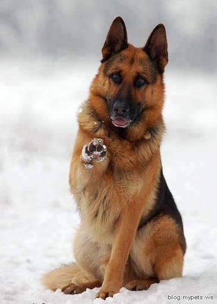
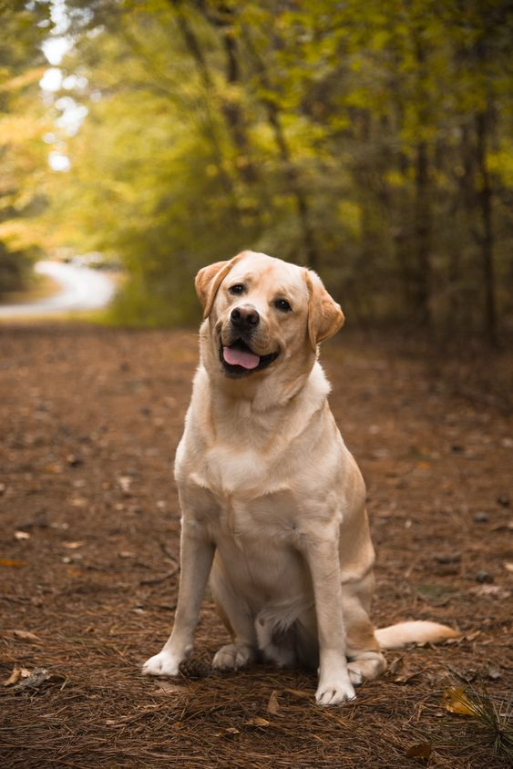

Sobre
Bem-vindo ao nosso site dedicado a curiosidades sobre cachorros. Aqui você encontrará informações fascinantes sobre diversas raças, suas características e comportamentos únicos.
Curiosidades

Pastor Alemão
Os pastores alemães são conhecidos por sua inteligência e lealdade, tornando-os excelentes cães de trabalho.

Labrador Retriever
Os labradores são famosos por serem amigáveis e sociáveis, além de serem ótimos cães de terapia.
Buldogue
Os buldogues são conhecidos por sua aparência única e temperamento gentil, fazendo deles ótimos companheiros.